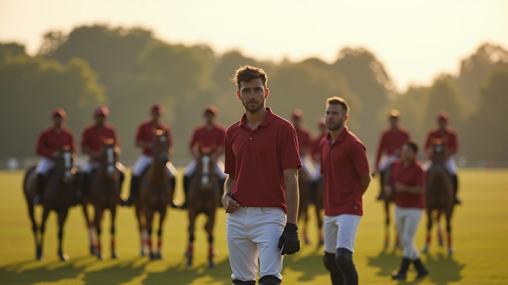
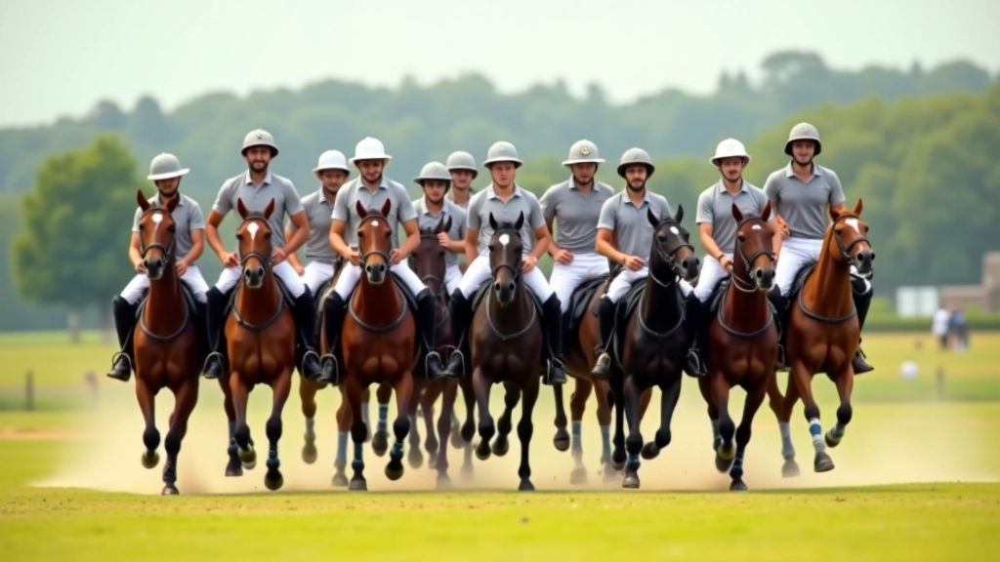
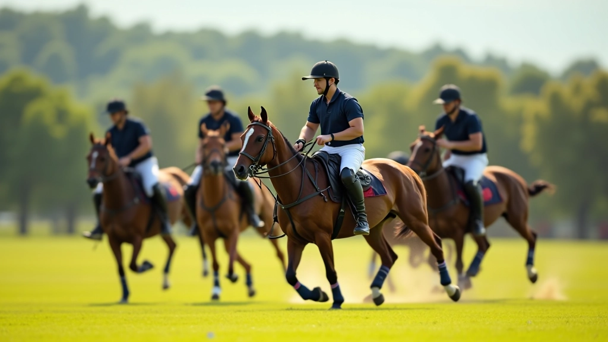

تمرين التمرير المتسلسل
هذا التمرين بسيط لكنه فعّال جداً. يقف الفريق في خط واحد، والهدف هو تمرير الكرة من شخص إلى آخر دون أن تسقط. يبدأ الجميع بسرعة بطيئة، ثم تزداد السرعة تدريجياً. المفتاح هنا هو التركيز — كل لاعب يجب أن يراقب زميله السابق والتالي.
الخطوات الأساسية
- رتب الفريق في خط مستقيم، مسافة متر ونصف بين كل لاعب
- ابدأ بتمرير الكرة من طرف واحد إلى الطرف الآخر
- كرّر العملية بسرعة تدريجياً متزايدة
- عندما تسقط الكرة، ابدأ من جديد — لا تيأس
التمرين يعمل بشكل أفضل عندما يكون هناك تركيز كامل. ستلاحظ في الأسابيع الأولى أن السرعة محدودة، لكن الاتساق يتحسن بسرعة. بعد 3-4 أسابيع من التدريب المنتظم (مرتين أسبوعياً)، يصبح الفريق قادراً على التمرير السريع بثقة.

نصيحة مهمة: التركيز على جودة التمرير أهم من السرعة. لاعب واحد يمرر بدقة أفضل من ثلاثة يمررون بعشوائية.
تمرين الحركة المتناسقة
هذا التمرين يركز على حركة الفريق كوحدة واحدة. الفريق يتحرك معاً على الملعب — يتقدمون معاً، يتراجعون معاً، يدورون معاً. الهدف هو أن يكون الجميع على نفس السرعة والاتجاه. في البداية قد يبدو غريباً، لكنه يعلّم الفريق فهم بعضهم البعض بدون كلام.

كيف يعمل التمرين
ابدأ بسرعة منخفضة جداً. جميع اللاعبين يتحركون بخط واحد متوازي. مدرب واحد يعطي الأوامر — تقدم، تراجع، يمين، يسار. الجميع يجب أن يتحركوا معاً بنفس الوقت بالضبط. لا توجد تأخيرات، لا توجد اختلافات. هذا يتطلب تركيزاً عالياً جداً من الجميع.
عندما يصبح التمرين سهلاً بالسرعة البطيئة، زيادة السرعة. بعد بضعة أسابيع، الفريق سيكون قادراً على التحرك بتزامن تام حتى بسرعات أعلى. هذا التزامن يترجم مباشرة إلى لعب أفضل على الملعب.
تمرين الهجوم والدفاع المنسق
هذا تمرين أكثر تعقيداً ولكنه واقعي جداً. نصف الفريق يلعب دوراً هجومياً، والنصف الآخر دفاعياً. المهمة هي تنفيذ حركة محددة مسبقاً — مثل هجمة من اليمين مع دفاع متناسق. التمرين يعيد نفسه عدة مرات حتى يصبح طبيعياً.
ماذا تحتاج
- ملعب بحجم قياسي (أو ملعب مصغر للبدايات)
- كرة واحدة على الأقل
- مدرب يراقب الحركات ويعطي تصحيحات
- فريم واضح للعبة — مثلاً: الهجوم من اليمين ينتهي عند منتصف الملعب
الفائدة الحقيقية لهذا التمرين تظهر عندما يتم تنفيذه بانتظام. الفريق الذي يمارسه مرتين أسبوعياً لمدة شهرين سيرى فرقاً واضحاً في أداء المباريات الفعلية.

تنبيه مهم
هذه التمارين موجهة للأغراض التعليمية والتدريبية فقط. الاستفادة الحقيقية منها تأتي عند التطبيق تحت إشراف مدرب متمرس. كل فريق له احتياجات مختلفة، وقد تحتاج التمارين إلى تعديل حسب مستوى اللاعبين والظروف المحيطة. تأكد من وجود بيئة آمنة وملعب مناسب قبل البدء.
نصائح عملية للنجاح
التمارين وحدها ليست كافية. تحتاج إلى بعض العوامل الإضافية لضمان النجاح:
الانتظام والمداومة
تدريب منتظم مرتين أسبوعياً أفضل بكثير من جلسة واحدة مكثفة كل شهر. الانتظام يبني العادات والفهم المشترك.
التواصل المستمر
اللاعبون يجب أن يتحدثوا مع بعضهم البعض — قبل التمرين وأثناءه وبعده. النقاش يساعد على فهم أعمق لما يحدث.
البدء ببطء
لا تحاول تسريع التمارين قبل أن يتقنها الفريق بشكل كامل. السرعة تأتي تدريجياً مع الممارسة.
الملاحظة والتصحيح
مدرب جيد يراقب كل حركة ويعطي ملاحظات فورية. الأخطاء الصغيرة إذا لم تُصحح ستصبح عادات سيئة.
الخلاصة
التنسيق الجماعي ليس شيئاً يحدث بالصدفة — إنه يُبنى بالعمل والممارسة المستمرة. التمارين التي قدمناها هنا مثبتة وفعالة. الفريق الذي يطبقها بجدية سيرى تحسناً واضحاً في الأداء والثقة. ابدأ بتمرين واحد، أتقنه، ثم انتقل للتالي. الصبر والانتظام هما المفتاح.
لا تنسَ أن الهدف النهائي ليس فقط الفوز — بل أيضاً الاستمتاع باللعب معاً. عندما يشعر الفريق بالتنسيق الحقيقي، تصبح كل مباراة أو تمرين تجربة ممتعة وذات معنى.